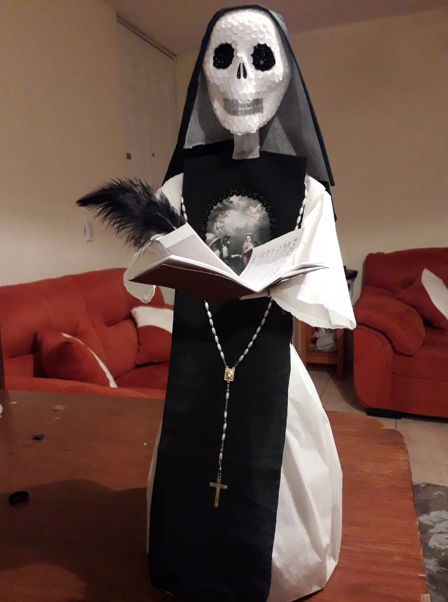
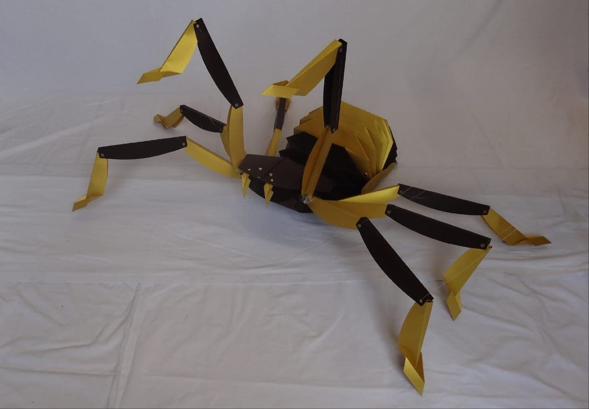

Es tan delgado, frágil y maleable. Su fina composición le convierte en un material desafiante y muy demandante. No se habla aquí del papel como soporte, o el papel como receptor de material artístico, sino de él como propio compositor de una obra de arte. Muchos han experimentado con él, y pese a no asociarse a una técnica clásica de muy larga data, lo cierto es que la demanda práctica que él implica lo vuelve un material muy noble y complejo con el que abordar un tema.

